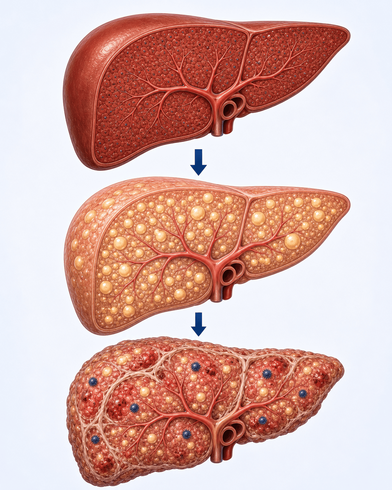
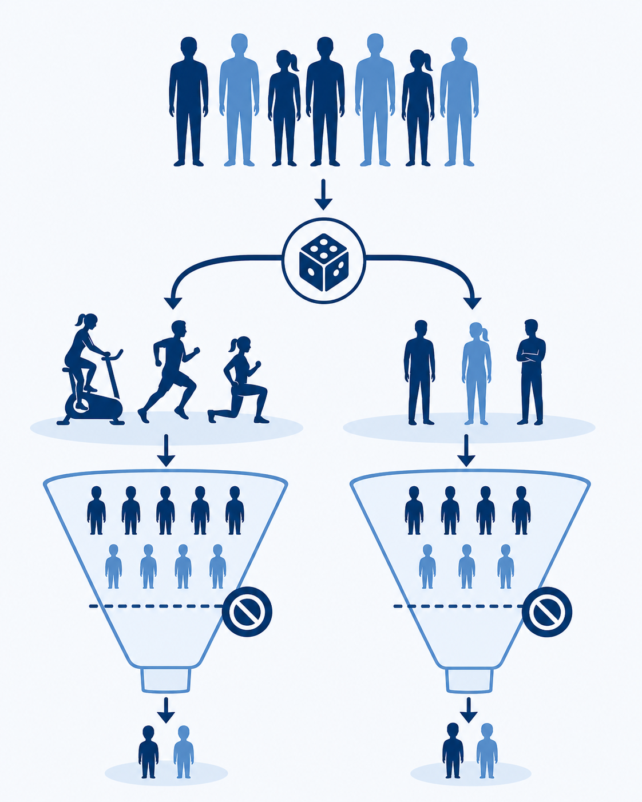
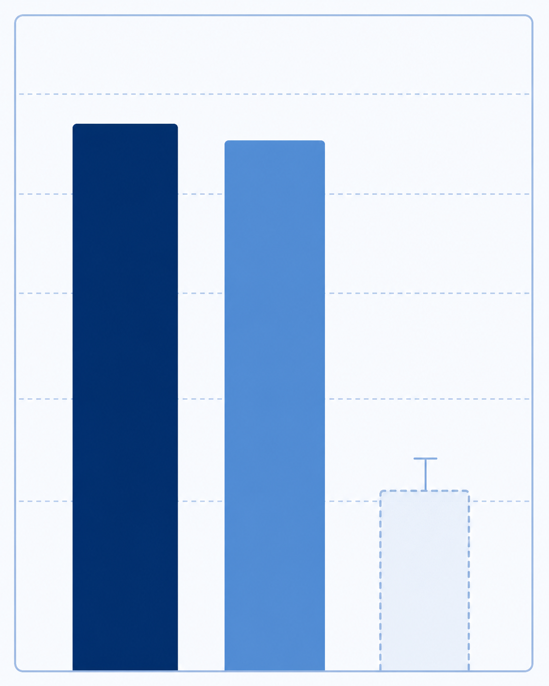

간 건강을 위해
운동, 정말 도움이 될까요?
만성 B형간염에 지방간이 겹친 분들에게 12주 고강도 인터벌 운동(HIIT)을 시험해 본 연구 이야기
왜 중요한 이야기일까요
만성 B형간염에 지방간이 겹치면, 간이 굳고 간암으로 가는 위험이 더 커집니다
만성 B형간염을 앓는 간에 지방까지 끼면, 간세포가 더 쉽게 손상되고 염증·섬유화(굳음)가 빨라질 수 있습니다.
B형간염 바이러스는 오랜 세월에 걸쳐 간에 염증을 일으키고, 여기에 지방간이 더해지면 간경변·간암으로 이어질 위험이 한층 높아집니다. 바이러스는 항바이러스제로 억제할 수 있지만, 지방간 자체를 줄이는 안전하고 확실한 약은 아직 부족합니다. 그래서 식사·운동 같은 생활습관 치료가 더욱 주목받고 있고, "운동이 정말 간 지방을 줄여줄까?"가 이 연구의 질문이었습니다.

어떻게 알아봤나요
참가자를 운동군과 비운동군으로 무작위 배정해 12주간 비교했습니다 — 단, 아주 작은 연구였습니다
만성 B형간염 + 지방간 환자를 운동군과 대조군으로 무작위 배정해, 12주간 고강도 인터벌 운동(HIIT)을 했습니다.
1차로 보려던 것은 MRI로 측정한 간 지방의 변화였습니다. 그런데 참가자 모집이 예상보다 너무 더뎌 연구가 계획보다 일찍 종료되었습니다. 그 결과 최종적으로 14명(군당 약 7명)만 끝까지 마쳤습니다. 사람 수가 이렇게 적으면 "효과가 있어도 통계로 잡아내기 어렵다(검정력 부족)"는 점을 먼저 알아두는 것이 중요합니다.

결과 ① — 간 지방은 어땠나요
가장 알고 싶었던 1차 결과(간 지방)에서는 운동군과 대조군의 차이가 분명하지 않았습니다
결과 ② — 체력과 기분은 좋아졌습니다
간 지방은 미확정이었지만, 심폐 체력과 정서적 안녕감은 운동군에서 분명히 개선됐습니다

그래서 어떻게 받아들이면 될까요
"운동이 간 지방을 줄인다"고는 아직 말할 수 없지만, 운동을 해야 할 이유는 충분합니다
간 지방에 대한 효과는 아직 미확정입니다. 하지만 체력과 기분이 좋아진다는 이점은 분명했습니다.
이 연구는 14명만 끝까지 마친 초소규모 + 조기 종료 연구라, 저자들도 결과를 "탐색적"이라고 밝혔습니다. 그래서 간 지방의 음성 결과를 "운동은 소용없다"로 단정해서는 안 됩니다 — 단지 이 작은 연구로는 확인하지 못했을 뿐입니다. 반대로 심폐 체력·정서 안녕감 개선은 분명했고, 이는 만성 B형간염 환자에게도 운동을 권할 충분한 이유가 됩니다. 더 큰 연구로 간 지방 효과는 추가로 확인이 필요합니다.
오늘 꼭 기억할 점
간 지방 효과는 아직 미확정 — 그래도 운동은 충분히 권할 만합니다
간 건강을 지키는
한 걸음 더
운동·식사 같은 생활습관과 B형간염 관리에 대해 궁금한 점이 있으시면 언제든 문의해 주세요
광교중앙로 298, 4층
5대암 검진
같은 자료를 다시 볼 수 있어요